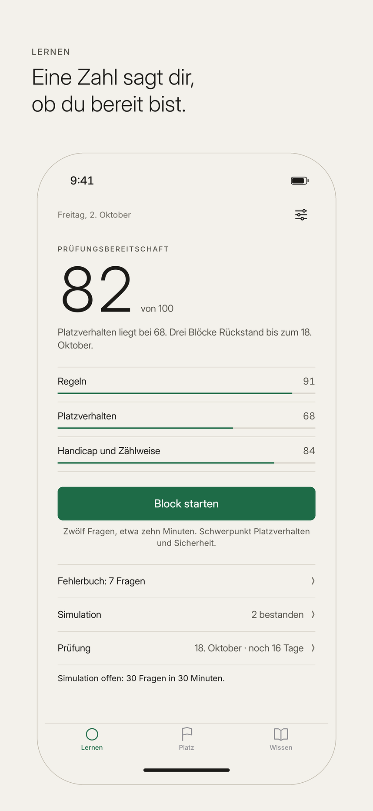

Platzreife PRO
Platzreife und erste Runde
Bereitet auf die Platzreife vor, mit Fragen zu Regeln, Platzverhalten, Handicap und Zählweise, jede mit Begründung.
Im App Store laden – Platzreife PROPlatzreife PRO bereitet dich auf die Platzreife vor und begleitet dich danach auf deine erste Runde.
Im App Store ladenAlle Funktionen stehen dir ohne Einschränkung offen: so viele Lernblöcke und Simulationen, wie du brauchst, das Üben deiner Fehler, alle Rundenarten, alle Etikette-Szenen und der Import deines eigenen Platzes.

Lernen
Gelernt wird in Blöcken zu zwölf Fragen, für die du etwa zehn Minuten brauchst. Der Katalog umfasst 170 eigene Fragen zu Regeln, Platzverhalten, Handicap und Zählweise, und jede Antwort kommt mit einer kurzen Begründung und der Nummer der Regel, auf die sie sich stützt. Was du falsch beantwortest, landet im Fehlerbuch und kommt in größer werdenden Abständen wieder, bis es sitzt. Sammeln sich dort ein paar Fragen, kannst du sie auch in einem eigenen Block üben.
Wie weit du bist, zeigt eine Zahl zwischen 0 und 100. Sie wird aus deinen Antworten berechnet, und welche Anteile in sie eingehen, kannst du in der App nachlesen. Ab 70 öffnet sich die Simulation. Sie läuft wie die Prüfung: dreißig Fragen, dreißig Minuten, getrennt gewertet nach Regel- und Allgemeinteil. Danach siehst du, wie viele Fehler du dir noch hättest leisten können, und gehst jede falsche Antwort mit ihrer Erklärung durch.
Auf dem Platz
Manches lernt man nicht aus Fragen. Die Etikette-Szenen spielen Situationen durch, die auf dem Platz tatsächlich vorkommen, das Demonstrationsloch führt Station für Station über ein Loch, und die Checkliste hält fest, was vor der ersten Runde erledigt sein sollte.
Während der Runde übernimmt der Runden-Assistent: Er zeigt die Entfernung zur Grünmitte, zählt deine Schläge und nennt für jedes Loch dein Netto-Par, das er am ersten Loch in einem Satz erklärt. Auf der Scorekarte siehst du nach jedem Loch, wo du Netto-Par gespielt hast und wo nicht, und zwischendurch erinnert dich ein leiser Hinweis an die Etikette, höchstens viermal je Runde. In der Prüfungsrunde und im Wettspiel sperrt Platzreife PRO alle Hinweise, die nach Regel 4.3 nicht erlaubt sind; die Entfernung bleibt.
Für die Entfernung braucht Platzreife PRO die Lage der Grüns. Mitgeliefert sind zwei erfundene Beispielplätze; deinen eigenen Platz kannst du als Platzdatei importieren. Wie das geht, steht im Support.
Nachschlagen
Was du nachschlagen willst, findest du im Wissen-Teil: 25 Regelsituationen mit dem Weg, wie du vorgehst, ein Glossar mit 60 Begriffen, dazu Handicap und World Handicap System sowie die Kosten von Platzreife und Mitgliedschaft. Die Suche findet Begriffe auch dann, wenn du sie ohne Umlaute oder unter einem früheren Namen wie „Wasserhindernis“ tippst, und bietet dir, wenn sie nichts findet, häufige Begriffe zum Weitersuchen an.
Deine Daten
Platzreife PRO braucht kein Konto und sammelt keine Daten über dich. Dein Lernstand liegt auf dem Gerät oder in deinem iCloud Drive, und du kannst ihn jederzeit als Datei exportieren. Den Standort verwendet die App nur während einer Runde und nur auf dem Gerät. Die Einzelheiten stehen in der Datenschutzerklärung.
- GerätiPhone und iPad mit iOS 17 oder neuer
- SprachenDeutsch, Englisch
- Kontonicht nötig
Hinweis
Platzreife PRO ist ein unabhängiges Produkt und steht in keiner Verbindung zum Deutschen Golf Verband e. V. Die Fragen sind eigens für die App geschrieben und nicht dem offiziellen Fragenkatalog entnommen. Die Prüfung selbst nimmt dein Golfclub ab.